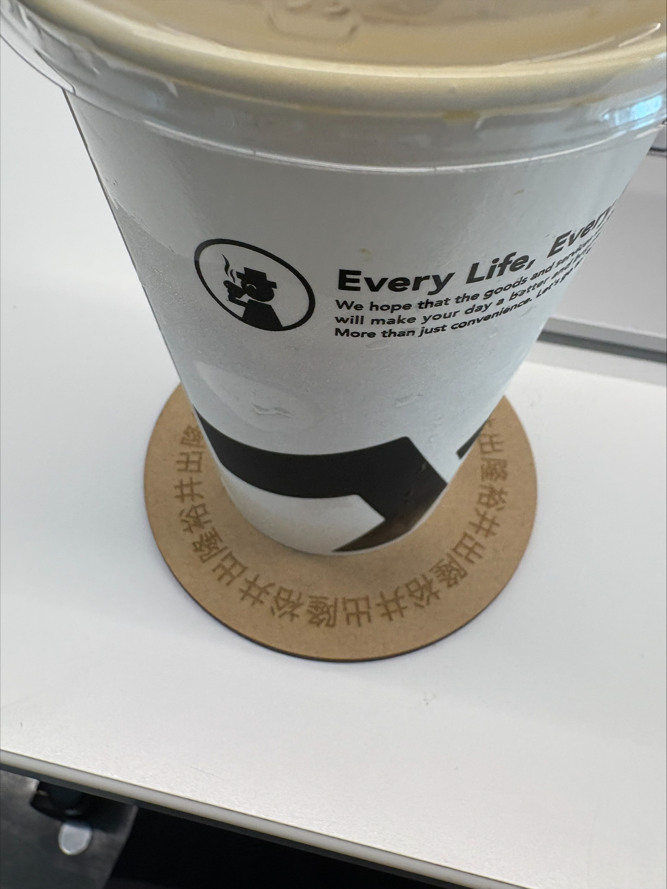
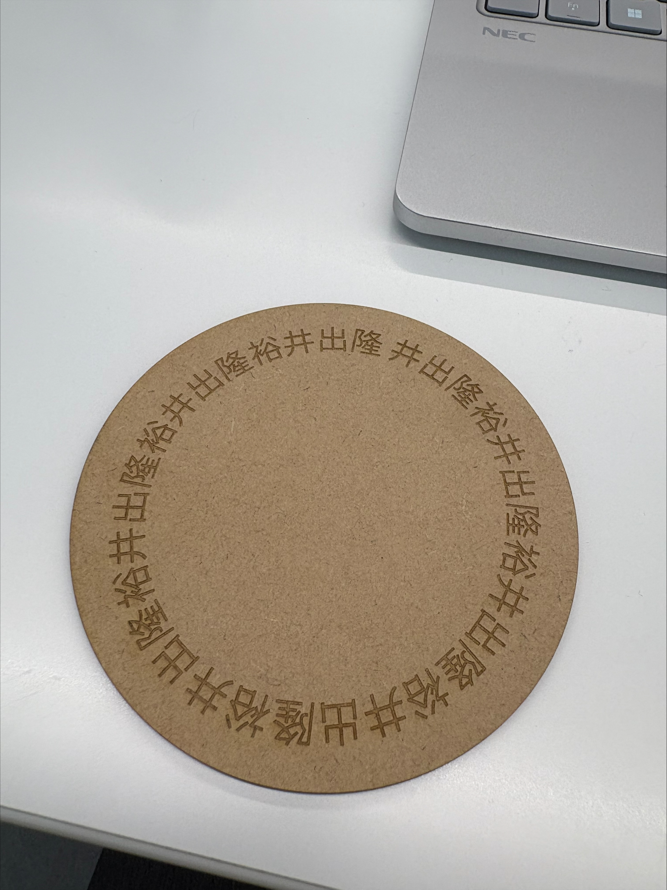

私は毎朝をコーヒーを飲む。マグカップにはこだわっているがその大切なマグカップを支えてあげるコースターを私は持っていないのだ。
そんな私に私だけのコースターを作ってあげたいと思い、作ることにした。

一見シンプルすぎて斬新だが、自分の名前というものは親からもらった大切なものであり、世界で一つなのだ。
そんな名前がレーザーによってデザインされたコースターは大切なものとなるだろう。

何かいいものを作りたいという一心でデザインを長時間考えていたが中々いいものが頭に浮かばなかった。
でも初心に戻って自分の中でずっと大切な無くならないものはなんなのか、ということを考えた時に1番に出てきたのは自分の名前であった。
このコースターと共にこれからもコーヒー生活を送っていきたい。